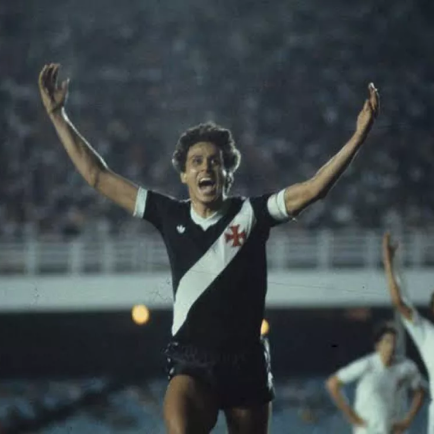
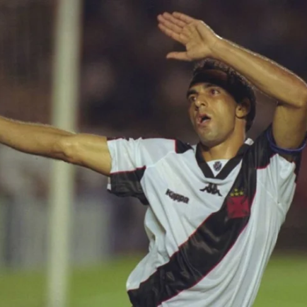
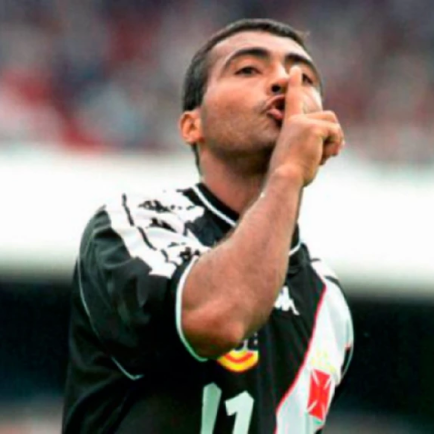
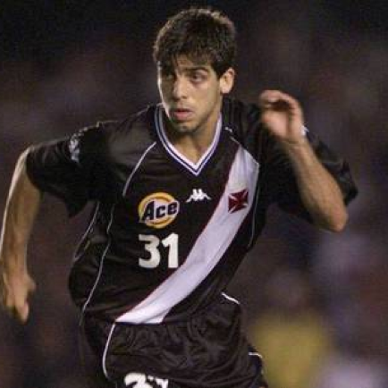

Vasco da Gama
O lugar que o Vasco da Gama ocupa na elite do futebol brasileiro tem a marca gloriosa do time conhecido como os camisas negras que, em 1923, com uma campanha arrasadora (11 vitórias, dois empates e apenas uma derrota), conquistou o primeiro titulo de campeão carioca de sua História.
Títulos
Campeonato Brasileiro: 4
Campeonato Carioca: 24
Torneio Rio–São Paulo: 3
Copa Libertadores da América : 1
Copa Mercosul: 1

Ídolos
- 
- 
- 
- 
Roberto Dinamite
Começou na base vascaína com 14 anos, ainda com o apelido de Calu. Atacante impiedoso, foi campeão e artilheiro carioca juvenil em 1970 e aos 16 anos foi inscrito no Campeonato Brasileiro a pedido do então técnico Mário Travaglini. Estreou em 14/11/1971, derrota por 1X0 para o E.C. Bahia. No segundo jogo, contra o Atlético Mineiro, o Jornal dos Sports, em matéria de Eliomário Valente e Aparício Pires, destacava “Vasco escala garoto-dinamite“. E, finalmente, no terceiro jogo, em 25/11, saiu o primeiro gol como profissional, o segundo na vitória por 2X0 sobre o S.C. Internacional. No dia seguinte o Jornal dos Sports divulgou para o mundo o apelido do novo ídolo do vasco da Gama, com a manchete: "Garoto-Dinamite explodiu".
Edmundo
Campeão brasileiro pelo Vasco em 1997, o artilheiro atingiu a marca impressionante de 29 gols em 28 jogos. Edmundo fez história com a camisa do Vasco e foi um jogador que, mais que atleta, foi torcedor. Foi protagonista na goleada contra o Flamengo, por 4 a 1, marcando três gols para o Vasco. Em seu retorno ao cruz-maltino, em 2007, o jogador esteve presente no jogo que resultou na maior mancha da história do clube, quando teve o seu primeiro rebaixamento. Apesar do final triste, Edmundo teve o jogo de encerramento da carreira em uma reedição da final da Libertadores, onde o vasco goleou o adversário Barcelona Sporting Club por 9 a 1. Até hoje Edmundo mostra o seu enorme carinho pelo clube e sua a torcida.
Romário
Revelado pelo Vasco, o Baixinho balançou as redes 313 vezes pelo clube, se tornando o 2° maior artilheiro da história do cruz-maltino, atrás apenas do ídolo Roberto Dinamite. Protagonizou a virada história de 4 a 3 sobre o Palmeiras, em jogo que valia título da Copa Merco Sul, além de conquistar o Campeonato Brasileiro, em 2000. Já foi eleito o melhor do mundo pela FIFA, em 1994, quando venceu a Copa do Mundo. Apesar da baixa estatura, é um dos maiores jogadores que já atuaram com a cruz de malta no peito.
Juninho
O melhor batedor de faltas não poderia ficar de fora dessa lista. Além dessa habilidade, Juninho era um meia completo: driblava, passava, era um bom marcador e tinha bom posicionamento. Protagonista da música sobre o gol de falta contra o River Plate no Monumental, Juninho foi eternizado e é relembrado todo jogo pela torcida vascaína. Com o clube, levantou duas vezes a taça de campeão brasileiro, além de conquistar o título da Libertadores, em 1998, e o da Copa Merco Sul, em 2000.
São Januário
São Januário foi erguido graças aos próprios vascaínos, que lideraram a campanha de arrecadação de recursos, com os torcedores que arrecadaram 685 contos e 895 mil réis para comprar o terreno em São Cristóvão, escolhido pelo Vasco por ser parecido com seu local de fundação, na zona portuária do Rio, e 2.000 contos de réis somente para a construção do estádio.

Torcida
Antes da Força Jovem do Vasco surgir, a torcida do Vasco começava a encher o Maracanã do meio para trás do Gol. Com o surgimento da Força Jovem isso mudou, e ocupamos grande parte do então maior estádio do mundo. Com isso, passamos a ser a maior e a principal torcida organizada do Vasco e do Brasil. Isso demonstra o que a FJV significa e representa para toda a NAÇÃO VASCAÍNA. A FORÇA veio para ficar e defender o VASCO. No mesmo ano de fundação da torcida, o Vasco voltou a ser Campeão Carioca, o Brasil foi Tri Campeão Mundial sendo o ano de 1970 um marco eterno na história do futebol.